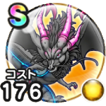

黒き偽竜グレイナル
時空の歪み18章10話のボスこころの最大コスト+4スキルの斬撃・体技ダメージ+10%イオ属性斬撃・体技ダメージ+12%ジバリア属性斬撃・体技ダメージ+12%ドッペル系へのダメージ+5%会心率+4% / 9.5点
くわしい特徴
【ランク特殊効果】 こころの最大コスト+4スキルの斬撃・体技ダメージ+10%イオ属性斬撃・体技ダメージ+12%ジバリア属性斬撃・体技ダメージ+12%ドッペル系へのダメージ+5%会心率+4%

時空の歪み18章10話のボスこころの最大コスト+4スキルの斬撃・体技ダメージ+10%イオ属性斬撃・体技ダメージ+12%ジバリア属性斬撃・体技ダメージ+12%ドッペル系へのダメージ+5%会心率+4% / 9.5点
【ランク特殊効果】 こころの最大コスト+4スキルの斬撃・体技ダメージ+10%イオ属性斬撃・体技ダメージ+12%ジバリア属性斬撃・体技ダメージ+12%ドッペル系へのダメージ+5%会心率+4%